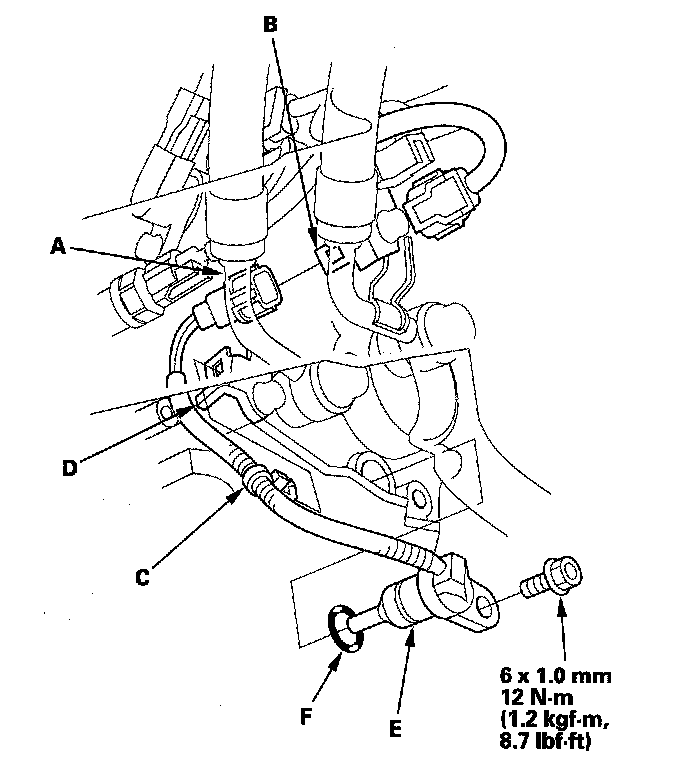

Transmission Temperature Sensor/Switch: Service and Repair
ATF Temperature Sensor Replacement1. Raise the vehicle up on a lift, or apply the parking brake, block both rear wheels, and raise the front of the vehicle. Make sure it is securely supported.
2. Remove the transmission undercover (A) and splash shield (B).
3. Remove the drain plug (A) and drain the automatic transmission fluid (ATF).
4. Reinstall the drain plug with a new sealing washer (B).
5. Disconnect the ATF temperature sensor connector (A) then remove the connector from the connector bracket (B).

6. Remove the harness clamp (C) from its bracket (D).
7. Remove the ATF temperature sensor (E) and replace the sensor.
8. Install the new O-ring (F) on the new ATF temperature sensor, and install the ATF temperature sensor.
9. Check the connector for rust, dirt, or oil. Connect the connector securely, and install it on its bracket.
10. Install the harness clamp on its bracket.
11. Refill the transmission with ATF.
12. Install the splash shield and transmission undercover.